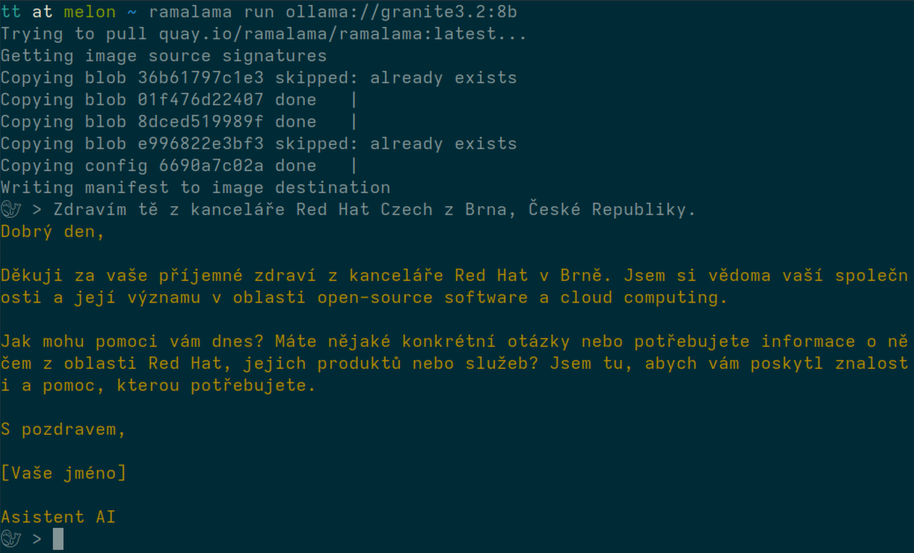

class: left, bottom, black, first-slide, background-white background-image: url(intro.png) background-size: contain # Deploying Open Source AI models with IBM's granite and RamaLama ## Tomas Tomecek --- # `/who "Tomáš Tomeček"` .left-column[ * Sr. Principal Software Engineer @ Red Hat * Log Detective - analyze logs with LLMs * Teaching git at FI MUNI * Automation, python, integration, RPMs, LLMs, DevConf.cz ] .right-column[ <img src="./tomas.jpg" width="320"> ] --- class: middle, white, center ??? --- class: middle, white, center  ??? --- # Architecture ??? --- # Granite 3.2 8B .right-column[ ] .left-column[ * Thinking * Summarization * Text classification * Text extraction * Question-answering * Retrieval Augmented Generation (RAG) * Code related tasks * Function-calling tasks * Multilingual dialog use cases * Long-context tasks ] ??? --- class: middle # The end .right-column[ ] .left-column[ * <span class="fa-regular fa-envelope"></span> `Tomas Tomecek <ttomecek@redhat.com>` * <span class="fa-brands fa-github-square"></span> [github.com/TomasTomecek/speaks](https://github.com/TomasTomecek/speaks) * <span class="fa-brands fa-mastodon"></span> [@TomasTomec@fosstodon.org](https://fosstodon.org/@TomasTomec) ] * Sources: https://ramalama.ai/ .small[ Picture of this cat created with DALL-E. ]